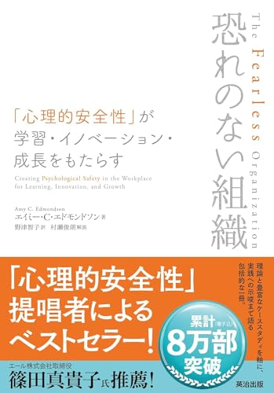
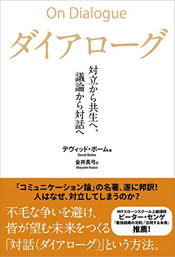
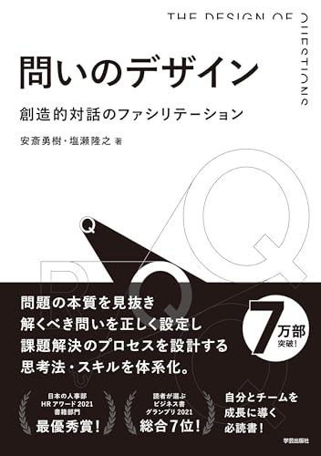
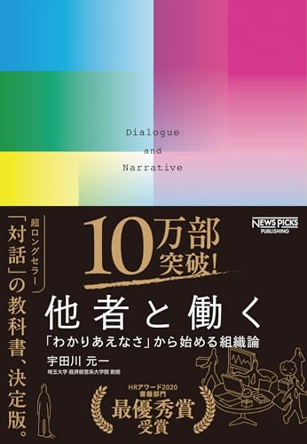
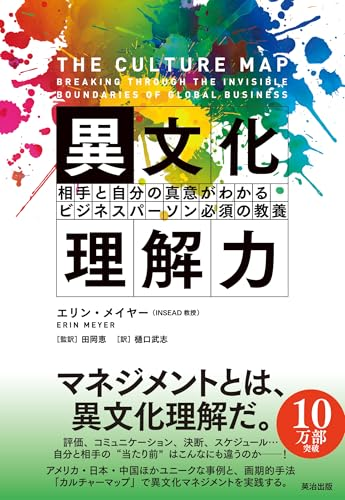
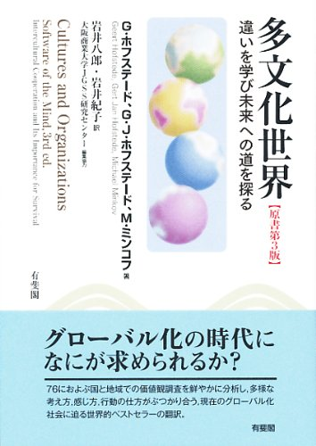
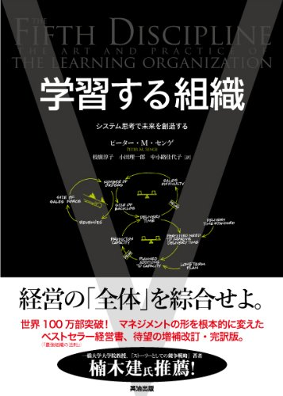

昇給交渉キット
対決ではなく、共に壁を越える
交渉した人の9割が年収アップ。それでも多くの人は「言えないまま」でいます。日本のはたらく現場の実態に接地した、動ける心のつくり方と、上司に渡せる型のキットです。
¥2,700税込・買い切り
現在、内容改訂のため販売を一時停止しています。
販売一時停止中
まず無料の計算機で試す
Store
きづきくみたて工房が、実際に現場で使い、本当に薦められるものだけを一箇所に集めました。対話をひらくための実践キット、考えを深めるためのおすすめの本。これから、道具やプログラム、旅の行き先も少しずつ加えていきます。
読んで終わりにしない、その場で使える対話の道具箱。進行台本・ワークシート・スライドまで、はじめての方が迷わず進められる形にしてあります。
対決ではなく、共に壁を越える
交渉した人の9割が年収アップ。それでも多くの人は「言えないまま」でいます。日本のはたらく現場の実態に接地した、動ける心のつくり方と、上司に渡せる型のキットです。
現在、内容改訂のため販売を一時停止しています。
数字を、対話と決断に変える
ファシリテーションの経験がなくても、90分の対話の場をひらけます。進行台本・ワークシート4種・反発への受けとめ方までそろえた、未来のリスク計算機の先にある完全キットです。
現在、内容改訂のため販売を一時停止しています。
無料キットを、当日そのまま進行できる
無料のPTA対話キットを、そのまま当日進行できる詳細テキスト＋スライド＋ワークシートのセット。日程が合わない方、独学で始めたい方のための、準備のいらない一式です。
現在、内容改訂のため販売を一時停止しています。
どのキットも、まず無料の計算機やキットで試してから、必要な方だけに有料版をご用意しています。導入のご相談はメールでお気軽に。特定商取引法に基づく表記はこちら。
対話力・心理的安全性・組織文化を深く理解するために、対話力向上プログラムで引用している厳選7冊。工房の考えの土台になっている本たちです。

心理的安全性研究の決定版。Googleの調査が裏付けたこの概念を、ハーバード大学教授であるエドモンドソンが20年以上の研究をもとに体系化。組織で本音の対話を実現するための土台を理解するための必読書。

「対話（dialogue）」と「議論（discussion）」を哲学的に区別した古典。物理学者ボームによる本書は、対話の本質を「意味が流れる場」と捉え、現代の対話実践のすべての源流となっている思想書。

日本の組織で対話を立ち上げるための、最も実践的な手引書。問題の本質を捉え、解くべき課題を設定し、関係者を巻き込み、ワークショップとして対話を設計する手順が体系化されている。本研修のインターバル設計とも親和性が高い。

ハイフェッツの「適応課題」理論を、日本の組織の現実に翻案した名著。「わかりあえなさ」を前提に、ナラティヴ・アプローチで他者との関係を編みなおす。「日本では本音対話が特に難しい」という実感に直結する一冊。

カルチャーマップ8軸モデルの本書。INSEADのメイヤー教授が膨大なインタビュー研究をもとに、コミュニケーション・フィードバック・対立の表明など、対話に決定的な影響を与える文化次元を整理した教養書。

文化6次元モデルの原典。ホフステードが IBM の70ヶ国調査を出発点に半世紀かけて構築した文化次元論を、自ら解説した決定版。日本の不確実性回避や男性性が世界最高クラスである理由を学術的に理解できる。

組織開発の現代的古典。システム思考、メンタルモデル、共有ビジョン、チーム学習、自己マスタリーの「5つのディシプリン」を提示。対話を組織の継続的な変容のエンジンとして位置づけた一冊。
※ 「Amazonで見る」リンクは Amazon アソシエイトのアフィリエイトリンクを含みます（tag=kizukikumitate-22）。リンク経由でご購入いただいた場合、当工房に紹介料が支払われる仕組みです。書籍の選定は内容の良さに基づくもので、報酬の有無に影響されていません。
工房が実際に使って良かったものを、少しずつ紹介していきます。「これは薦めたい」と思ったものだけを、理由とともに。
対話やふりかえり、集中のために工房が愛用している道具たち。
工房以外の学びの場で、心から薦められる講座やプログラム。
対話と学びが深まる、行ってよかった土地や訪ね先の紹介。